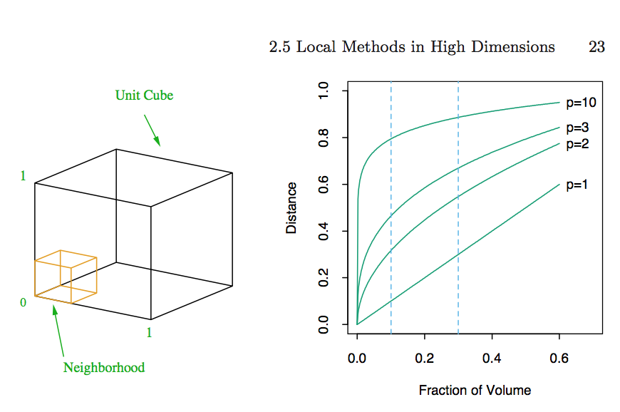

Meet with seminar speakers. When you go on the job market face recognition is priceless. I met Scott Zeger at UW when I was a student. When I came for an interview I already knew him (and Ingo, and Rafa, and ...)
Related: ask a question in seminar.
Jeffrey Leek
Johns Hopkins Bloomberg School of Public Health
Meet with seminar speakers. When you go on the job market face recognition is priceless. I met Scott Zeger at UW when I was a student. When I came for an interview I already knew him (and Ingo, and Rafa, and ...)
Related: ask a question in seminar.
In approximate order of difficulty
Goal: Describe a set of data


Goal: Find relationships you didn't know about


Goal: Use a relatively small sample of data to say something about a bigger population

Goal: To use the data on some objects to predict values for another object


Goal: To find out what happens to one variable when you make another variable change.

Goal: Understand the exact changes in variables that lead to changes in other variables for individual objects.

http://www.fhwa.dot.gov/resourcecenter/teams/pavement/pave_3pdg.pdf
In approximate order of difficulty
Supervised
Unsupervised
Semi-supervised
You have some data
library(bootstrap)
data(stamp)
str(stamp)
'data.frame': 485 obs. of 1 variable:
$ Thickness: num 0.06 0.064 0.064 0.065 0.066 0.068 0.069 0.069 0.069 0.069 ...
thick = stamp$Thickness
You want to know what this distribution looks like.
boxplot(thick)
stripchart(thick,add=T,vertical=T,jitter=0.1,method="jitter",pch=19,col=rgb(0,0,1,0.25))
\(X_1,\ldots,X_n \sim F\) with density \(f(\cdot)\) and you want an estimator \(\hat{f}\)
First idea - bin the data. In math this is what this looks like:
\[I_j = (x_0 + j\times h,x_0+(j+1)\times h],j=-1,0,1,\ldots\]
Calculate counts in bins
\[C_j = \sum_{i=1}^n I(x_i \in I_j)\]
Parameters are \(x_0\), \(h\).
par(mfrow=c(1,2))
hist(thick,col="blue"); hist(thick,breaks=100,col="blue")

Suppose you want an actual estimate of \(f(\cdot)\), then we need to estimate probability of being in a bin.
\[\hat{f}(x) = \frac{1}{2hn} \#\{i; X_i \in (x-h,x+h]\}\]
You can think of this as an approximation to this representation of the density:
\[f(x) = \lim_{h \rightarrow 0} \frac{1}{2h} \mathbb{P}[x-h < X \leq x+h]\]
This should look familiar, we are just replacing limits/expectations/etc with their empirical counterparts.
\[\hat{f}(x) = \frac{1}{2hn} \#\{i; X_i \in (x-h,x+h]\}\]
can be written as
\[ \hat{f}(x) = \frac{1}{nh} \sum_{i=1}^n w \left(\frac{x-X_i}{h}\right)\]
\[ w(x) = \left\{ \begin{array}{lr} 1/2 & if |x| < 1 \\ 0 & else\end{array}\right.\]
In general you can can write a kernel smoother as:
\[ \hat{f}(x) = \frac{1}{nh} \sum_{i=1}^n K\left(\frac{x-X_i}{h}\right)\]
where \(\int K(x) dx =1\) (this guarantees that \(\int \hat{f}(x) dx = 1\)) and \(h\) is the bandwidth.
http://longor.public.iastate.edu/Stat516S13/slides/04.smoothing1.pdf
dens = density(thick);
plot(dens,col="blue",lwd=3);

dvals = rep(0,length(dens$x))
for(i in 1:length(thick)){
dvals = dvals + dnorm(dens$x,mean=thick[i],sd=dens$bw)/length(thick)
}
plot(dens,col="red",lwd=3); points(dens$x,dvals,col="blue",pch=19,cex=0.5)
We often care about things like MSE:
\[ MSE(x) = \mathbb{E}\left[\left(\hat{f}(x) - f(x)\right)^2\right]\]
\[=\left(\mathbb{E}[\hat{f}(x)] - f(x)\right)^2 + {\rm Var}(\hat{f}(x))\]
\[E_{\hat{F}}[Y|X=x_0] = {\rm a.v.e.} \{ y_i; x_i = x_0\}\]
If the values of \(x_i\) are categorical we can estimate this directly.
If not we need to "borrow strength"
You've seen this before for linear regression
Define \(\{W_i(x)\}_{i=1}^{n}\) for each \(x\) and let
\[s(x) = \sum_{i=1}^n W_i(x) y_i\]
\[ E[ Y | X ] = \int y f_{X,Y}(x,y) \, dy / f_X(x)\]
\[s(x) = \frac{ n^{-1}\sum_{i=1}^n K\left( \frac{x - x_i}{h} \right) y_i } { n^{-1}\sum_{i=1}^n K\left ( \frac{ x - x_i }{h} \right)}\]
Again we are basically just taking integrals and replacing them with sums. Noticing a theme here? Write down the theoretical parameter you are trying to estimate and then substitute empirical analogs.
\[Bias(x) = \int K(z) (f(x-hz) - f(z))dz\]
\[Var(x) = n^{-1} \int \frac{1}{h^2} K\left(\frac{x-y}{h}\right)^2 f(y)dy - n^{-1} \left(\int \frac{1}{h}K\left(\frac{x-y}{h}\right)f(y)dy \right)^2\]
Assume \(h = h_n \rightarrow 0\) with \(nh_n \rightarrow 0\). If this is true then bias/variance go to zero as \(n\rightarrow \infty\).
You can asymptotically minimize \(MSE(X)\) by solving \(\frac{\partial}{\partial h} MSE(x) = 0\)
You get something like this:
\[h_{opt} = n^{-1/5} \left(\frac{f(x)\int K^2(z)dz}{(f''(x)^2 (\int z^2 K(z)dz)^2)}\right)^{1/5}\]
Derivation: http://stat.ethz.ch/education/semesters/SS_2006/CompStat/sk-ch2.pdf
nmodes <- function(y){
x <- diff(y)
n <- length(x)
sum(x[2:n] < 0 & x[1:(n-1)] > 0)
}
\(X_1, \ldots, X_n \sim f(x_1,\ldots,x_d)\)
We can estimate a multivariate smoother
\[ \hat{f}(x) = \frac{1}{nh^d} \sum_{i=1}^n K\left(\frac{x_i-X_i}{h}\right)\]
wher the kernel \(K(\cdot)\) is now a function on a d-dimensional vector satisfying
\(K(u) \geq 0\), \(\int_{\mathbb{R}^d} K(u)du = 1\), \(\int_{\mathbb{R}^d}uK(u)du = 0\) and \(\int_{\mathbb{R}^d} uu^T K(u)du = I_d\)
Usually you use a product kernel like \(K(u) = \prod_{j=1}^d k(u_j)\).
Best possible MSE rate is \(O(n^{-4/(4+d)})\)

Clustering organizes things that are close into groups

http://scholar.google.com/scholar?hl=en&q=cluster+analysis&btnG=&as_sdt=1%2C21&as_sdtp=


In general:
\[\sqrt{(A_1-A_2)^2 + (B_1-B_2)^2 + \ldots + (Z_1-Z_2)^2}\] http://rafalab.jhsph.edu/688/lec/lecture5-clustering.pdf

In general:
\[|A_1-A_2| + |B_1-B_2| + \ldots + |Z_1-Z_2|\]
set.seed(1234); par(mar=c(0,0,0,0))
x <- rnorm(12,mean=rep(1:3,each=4),sd=0.2)
y <- rnorm(12,mean=rep(c(1,2,1),each=4),sd=0.2)
plot(x,y,col="blue",pch=19,cex=2)
text(x+0.05,y+0.05,labels=as.character(1:12))

distdataFrame <- data.frame(x=x,y=y)
dist(dataFrame)
1 2 3 4 5 6 7 8 9 10 11
2 0.34121
3 0.57494 0.24103
4 0.26382 0.52579 0.71862
5 1.69425 1.35818 1.11953 1.80667
6 1.65813 1.31960 1.08339 1.78081 0.08150
7 1.49823 1.16621 0.92569 1.60132 0.21110 0.21667
8 1.99149 1.69093 1.45649 2.02849 0.61704 0.69792 0.65063
9 2.13630 1.83168 1.67836 2.35676 1.18350 1.11500 1.28583 1.76461
10 2.06420 1.76999 1.63110 2.29239 1.23848 1.16550 1.32063 1.83518 0.14090
11 2.14702 1.85183 1.71074 2.37462 1.28154 1.21077 1.37370 1.86999 0.11624 0.08318
12 2.05664 1.74663 1.58659 2.27232 1.07701 1.00777 1.17740 1.66224 0.10849 0.19129 0.20803


dataFrame <- data.frame(x=x,y=y)
distxy <- dist(dataFrame)
hClustering <- hclust(distxy)
plot(hClustering)

myplclust <- function( hclust, lab=hclust$labels, lab.col=rep(1,length(hclust$labels)), hang=0.1,...){
## modifiction of plclust for plotting hclust objects *in colour*!
## Copyright Eva KF Chan 2009
## Arguments:
## hclust: hclust object
## lab: a character vector of labels of the leaves of the tree
## lab.col: colour for the labels; NA=default device foreground colour
## hang: as in hclust & plclust
## Side effect:
## A display of hierarchical cluster with coloured leaf labels.
y <- rep(hclust$height,2); x <- as.numeric(hclust$merge)
y <- y[which(x<0)]; x <- x[which(x<0)]; x <- abs(x)
y <- y[order(x)]; x <- x[order(x)]
plot( hclust, labels=FALSE, hang=hang, ... )
text( x=x, y=y[hclust$order]-(max(hclust$height)*hang),
labels=lab[hclust$order], col=lab.col[hclust$order],
srt=90, adj=c(1,0.5), xpd=NA, ... )
}
dataFrame <- data.frame(x=x,y=y)
distxy <- dist(dataFrame)
hClustering <- hclust(distxy)
myplclust(hClustering,lab=rep(1:3,each=4),lab.col=rep(1:3,each=4))


heatmap()dataFrame <- data.frame(x=x,y=y)
set.seed(143)
dataMatrix <- as.matrix(dataFrame)[sample(1:12),]
heatmap(dataMatrix)

set.seed(1234); par(mar=c(0,0,0,0))
x <- rnorm(12,mean=rep(1:3,each=4),sd=0.2)
y <- rnorm(12,mean=rep(c(1,2,1),each=4),sd=0.2)
plot(x,y,col="blue",pch=19,cex=2)
text(x+0.05,y+0.05,labels=as.character(1:12))


kmeans()dataFrame <- data.frame(x,y)
kmeansObj <- kmeans(dataFrame,centers=3)
names(kmeansObj)
[1] "cluster" "centers" "totss" "withinss" "tot.withinss" "betweenss"
[7] "size"
kmeansObj$cluster
[1] 3 3 3 3 1 1 1 1 2 2 2 2
kmeans()par(mar=rep(0.2,4))
plot(x,y,col=kmeansObj$cluster,pch=19,cex=2)
points(kmeansObj$centers,col=1:3,pch=3,cex=3,lwd=3)

set.seed(1234)
dataMatrix <- as.matrix(dataFrame)[sample(1:12),]
kmeansObj2 <- kmeans(dataMatrix,centers=3)
par(mfrow=c(1,2), mar = c(2, 4, 0.1, 0.1))
image(t(dataMatrix)[,nrow(dataMatrix):1],yaxt="n")
image(t(dataMatrix)[,order(kmeansObj$cluster)],yaxt="n")

Single
\[d_{SL}(G,H) = \min_{i\in G, i' \in H} d_{ii'}\]
Complete
\[d_{SL}(G,H) = \max_{i\in G, i' \in H} d_{ii'}\]
Average
\[d_{GA}(G,H) = \frac{1}{N_G N_H} \sum_{i \in G} \sum_{i' \in H} d_{ii'}\]

Assuming that the data vector \(X_p \sim p_k(x)\) for some \(k=1,\ldots,K\) then as \(N \rightarrow \infty\)
\[d_{SL}(G,H) \rightarrow 0\] \[d_{CL}(G,H) \rightarrow \infty\] \[d_{GA}(G,H) \rightarrow \int \int d(x,x')p_{G}(x)p_{H}(x')dxdx'\]

http://www.stat.cmu.edu/~rnugent/teaching/CMU729/Lectures/NPClust.pdf
Given initial clusters \(m^{(1)}_1,\ldots,m^{(1)}_k\) we iterate between:
Assign each point to a cluster
\[S_i^{(t)} = \left\{x_p: ||x_p - m_i^{(t)}||^2 \leq ||x_p - m_j^{(t)}||^2, \forall j\right\}\]
Update means
\[m_{i}^{(t+1)}=\frac{1}{|S_i^{(t)}|} \sum_{x_j \in S_i^{(t)}} x_j\]
Stop when the \(m_i\) have converged to local modes.
Similar to an EM algorithm.

https://dl.dropboxusercontent.com/u/7710864/jhsph753/lectures/vadim.pdf

Let \(X_{m \times n}\) be the data matrix \(B_{n \times k}\) be the matrix of weights and \(A_{k \times n}\) be the assignment matrix. Then
\[XBA = MA\]
realizes the assignment
\(x_i \rightarrow m_j\), where \(m_j = X b_j\).
https://dl.dropboxusercontent.com/u/7710864/jhsph753/lectures/vadim.pdf
https://dl.dropboxusercontent.com/u/7710864/jhsph753/lectures/vadim.pdf
Assume the data are drawn from a distribution:
\[f(x | \pi,\mu,\Sigma) = \sum_{g=1}^G \pi_g \phi(X | \mu_g,\Sigma_g)\]
where \(\pi_g\) is the probability a point belongs to group \(g\) and \(\phi(x|\mu_g,\Sigma_g\)) is the multivariate Guassian density.
\[\pi_{ik}^{(s)} = \frac{\pi_k^{s-1} \phi(x_i; \mu_k^{s-1},\Sigma_k^{s-1})}{\sum_{k'=1}^K \pi_{k'}^{s-1} \phi(x_i; \mu_k^{s-1}, \Sigma_{k'}^{(s-1)})}\]
\[\pi_k^{(s)} = \frac{1}{n} \sum_{i=1}^n \pi_{ik}^{(s)}\]
\[ \mu_k^{(s)} = \frac{\sum_{i=1}^n \pi_{ik}^{(s)}x_i}{\sum_{i=1}^n \pi_{ik}^{(s)}}\]
\[ \Sigma_{k}^{(s)} = \frac{\sum_{i=1}^n \pi_{ik}^{(s)} (x_i - \mu_k^{(s)})}{\sum_{i=1}^n \pi_{ik}^{(s)}}\]
\[B = \frac{p(X | M_1)}{p(x | M_2)}\]
\[p(X | M_k) = \int p(X | \theta_k, M_k) p(\theta_k | M_k) d\theta_k\]

library(mclust); data(faithful); faithfulMclust <- Mclust(faithful)
summary(faithfulMclust,parameters=TRUE)
----------------------------------------------------
Gaussian finite mixture model fitted by EM algorithm
----------------------------------------------------
Mclust EEE (elliposidal, equal volume, shape and orientation) model with 3 components:
log.likelihood n df BIC ICL
-1126 272 11 -2314 -2361
Clustering table:
1 2 3
130 97 45
Mixing probabilities:
1 2 3
0.4619 0.3565 0.1816
Means:
[,1] [,2] [,3]
eruptions 4.476 2.038 3.82
waiting 80.892 54.493 77.67
Variances:
[,,1]
eruptions waiting
eruptions 0.07728 0.4765
waiting 0.47650 33.7485
[,,2]
eruptions waiting
eruptions 0.07728 0.4765
waiting 0.47650 33.7485
[,,3]
eruptions waiting
eruptions 0.07728 0.4765
waiting 0.47650 33.7485
clust1 = data.frame(x=rnorm(100),y=rnorm(100))
a = runif(100,0,2*pi)
clust2 = data.frame(x=8*cos(a) + rnorm(100),y=8*sin(a) + rnorm(100))
plot(clust2,col='blue',pch=19); points(clust1,col='green',pch=19)
dat = rbind(clust1,clust2)
kk = kmeans(dat,centers=2)
plot(dat,col=(kk$clust+2),pch=19)